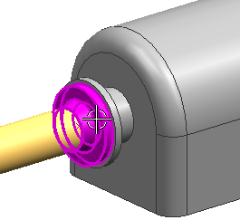
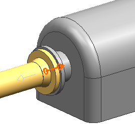

管段分隔符将决定管道的起始和终止位置。由于您想让法兰包含在管段中，因此您需要拾取把这些法兰放置在边界内的端口。您将选择背离管道通路的端口。
选择泵上的法兰(rtg1_VFL_1_300)。

rtg1_VFL_1_300将作为节点添加到指定分隔符的项列表中。
展开这个节点。
现在这个法兰的所有端口均可见。注意到它们都被设置为否。
在指定分隔符对话框中，右击指向泵的端口(P2)，然后选择指派分隔符。

这个端口的分隔符状态现在将变为是，您现在可以开始定义下一个分隔符。